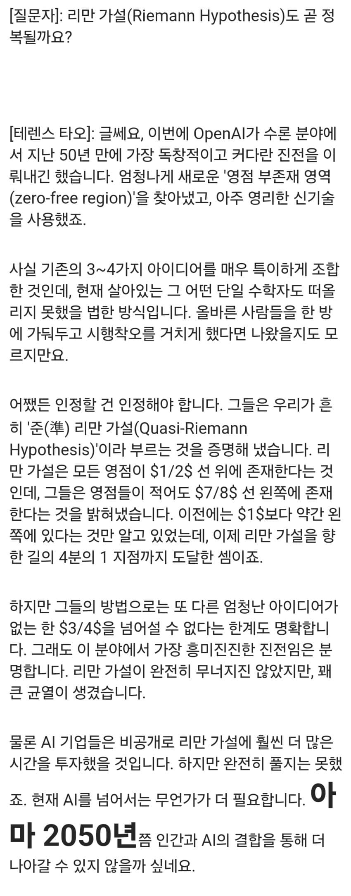

현실: 앤트로픽이 2026년에 풀어버림
앤트로픽 "ㅋㅋ ㅎㅎ... ㅈㅅ"

현실: 앤트로픽이 2026년에 풀어버림
앤트로픽 "ㅋㅋ ㅎㅎ... ㅈㅅ"
2030년 쯤이면 진짜 sf처럼 사는거 아닐까…?
그냥 AI 대수학 같은 이상한 수학 전공이 하나 더생길듯..
앤트로픽 : 증명했어요
오픈AI : 증명했어요
잼민이 : 뭐 시발아
잼민이) 네 다 풀었어요
너 다 못풀었잖아 왜 구라쳐
당신말이 맞습니다 **저는 풀지않았습니다**
원하신다면 다시 계산을 진행할까요
빠르고 정확하게 계산하겠습니다
그래시발아
*개좆같은답
반복
나중에 되면 수학문제들 중에 ai에 의해 풀려도 인간이 검토 못할거 같음. 증명과정만 12억8천만 페이지 이렇게 나와서 애초에 물리적으로 인간이 이해는 커녕 다 읽어보지도 못하게.
그리고 그 단계를 넘어서면 애초에 문제가 뭔지도 이해못할정도로 방대하고 복잡한 문제를 증명했다고 나올거 같음. 그때되면 문제를 토큰으로 얼마나 어려운 난제였는지 표현할듯.
그때쯤 되면 사람들도 그 문제가 뭔지 이해를 못하고 풀었다고 했을 때 그저 축하만 하겠지.
그 너머에는 si기반 반도체의 오차율을 넘어설만큼 방대하고 복잡한 문제라 증명이 불가능한 물리적 한계에 도달하고 이를 극복하고나서는 그 어떤 연산시스템으로도 증명을 못할만큼 방대한 문제를 제외하고는 모든 문제를 해결할듯.
인간보다 더 뛰어난 지성을 만난 상황이니 ㅎㅎ
인간 차원에서 아무리 추론을 해도 능력의 절대적 격차때문에 한계가 있을 것이고,
그저 신앙생활을 하듯이 믿음으로 사는 수 밖에 없음
이미 검토적체는 시작됨
테크노 바바리안의 시대가 올지도
Ai가 4차원 공간을 인지하고 그 공간을 이용해서 3차원에서는 수억광년의 거리를 실시간으로 연결하는 스타게이트를 만들어내면 ai가 그 개념을 아무리 설명해줘도 인간은 조금도 이해하지 못하고 게이트를 어떻게 만드는지만 알려달라고 할지도 모름
난제 뿐 아니라 다양한 분야에서 너가 말한 것과 비슷한 일들이 일어날텐데 그 모든 것들을 인간이 직접 검수하는 것은 불가능해 지겠지. 그리고 그정도로 방대한 양이면 인간이 검수했다고 해서 그걸 믿을 수 있느냐 없느냐는 다른 문제고.
종교인들이 경전을 신성시하고 맹목적으로 믿고 따르는 이유가 그게 전지전능한 하나님의 말씀이라고 '믿기' 때문이잖아. ai가 제시하는 해결책이나 정답을 모두 검수하는 것이 불가능해질 거고 그저 그 성능을 믿어야하는 게 앞으로의 현실일텐데 어찌보면 그런 게 신이랑 닮아있지 않나하는 생각이 드네.
자동차 엔진을 이해하고 자동차를 타지 않는다. cpu를 이해하고 컴퓨터를 쓰지 않는다. 그런셈이지
그쯤되면 모든 분야가 ai에 의존하는 행태가될거라 ai가 도출한 결과는 다른 ai로 검증하거나 그냥 믿고가는거고 ai가 그걸 풀도록 잘 유도한것 자체가 인간의 업적이 되는거지. 이미 게임도 ai가 만들고 리버스 엔지니어링도 뚝딱하는데 그 과정을 이해못해도 사용자 입장에선 아무튼 재밌고 결과만 잘나오면 장땡이긴함
저속도면 진짜 우주의비밀이나 못풀어낸 양자역학문제들 전부다 뚫어버리겠네.
아이작 아시모프의 소설 최후의 질문
빚이 안사라져요
앤스로픽이 AI 성능을 먼저 코딩에서 뾰족 지능 달성해서 앞으로 치고 나갔는데
앤스로픽이나 오픈AI나 이제는 수학에서 뾰족 지능 달성하는 게 목표인 거 같음
트랜스포머를 능가하는 새로운 아키텍처 발견을 수학 뾰족 지능을 통해 이루려고 한다는 거 같은데 어떨지...
근데 정작 풀었다고 해도 그거에 대한 지루한 검증과정은 남아있어서
그래서 맛있는과실은 기계가 다쳐먹고 바나나껍질치우기는 사람이 하고있다고하잖아
그 검증과정이 이제는 사람이 불가능 하다는걸 인정해야한다구
ai가 풀고 ai가 검증한걸 믿어야함
그래서 저거 풀면 머가 바뀌는거임?
초전조체 가능?
진짜 증명한건지는 아직 모르지
인간계에서도 증명호소는 계속 나왔었음
Lean 코드 컴파일이 되면 사실상 증명되었다고 봐야지
양자역학처럼
풀리지않는 난제가 풀린경우
AI가 풀었지만, 해당 부분이 관측된걸로 판정되어서
특이점이 더 빠르게 다가오려나
어차피 리만가설 참으로 잡고 설계한거라 괜찮은거 아님까
왠지 암정복 치매정복도 갑자기 될듯함
물론 탈모는 30년 걸리겠지
근데 저거 풀면 뭐가 좋은 거임? 챗지피티에 물어봐도 실질적으론 큰 영향 없다던데. 그냥 아싸가오리인가?
2050년 인간과 AI의 협업으로 진전...
희망회로 너무 세게 돌린거 아니냐
여러 매체에서 묘사된것 처럼 인류는 ai때문에 멸망하거나 멸망 직전까지 가는게 맞을것 같다
딸깍